Agentic Horizon · Lesson 12 · Tactic: Orchestrate Your Agents
Multi-Agent Orchestration: The O-Agent
When the interface becomes the wall, put one thin custom agent in front of the fleet. Give it lifecycle tools, protect its context, and review every result through observability.
Video spine · 56:08
Core lab · 120–180 min
Course repo · multi-agent-orchestration
11 verified 1920×1080 frames
Mastery promise. By the end, you will be able to explain why orchestration follows custom agents, read the O-agent through its core four, map all eight management tools to CRUD, distinguish primary agents from sub-agents, trace the observability pipeline, run the prompt-driven sleep-check loop, and conduct a plan → build → review fleet without becoming its hidden workflow engine.
BaseUse the capable general agent.
BetterImprove its context and instructions.
MoreAdd compute through additional agents.
CustomControl the core four for a domain.
OrchestratedCommand the fleet through one interface.
The dangerous first impression is that orchestration means building one enormous agent that knows everything. This lesson teaches the opposite: keep one coordinator thin, give focused primary agents protected windows, and make the system’s work observable enough to control.
You already know the prerequisites. A useful agent has a legible context, model, prompt, and tool surface. A custom agent lets you program those four. More agents add compute. But at some point, “more” becomes a human-interface problem. You open one terminal, send a prompt, wait, open another, remember what the first was doing, compare two partial outputs, and relay the useful result into a third prompt. The agents may be parallel; your attention is still serial.
The O-agent is Dan’s reference answer. It is a custom meta-agent with a completely overwritten system prompt and eight management tools exposed through an in-memory MCP server. It creates, commands, checks, interrupts, deletes, and accounts for managed agents. It does not implement the feature, inspect every log, or become a substitute builder. The orchestration app around it adds the other two pillars: CRUD-for-agents and observability.
What you are training
ReadTrace orchestrator and managed-agent behavior through the core four and the actual course files.
ConductCreate, command, re-prompt, observe, interrupt, and delete agents without hopping into their terminals.
DiagnoseUse status tails, event filters, costs, context bars, consumed files, produced files, and diffs to locate failure.
JudgeKnow when a fleet earns its overhead and when one focused in-loop agent is the better tool.
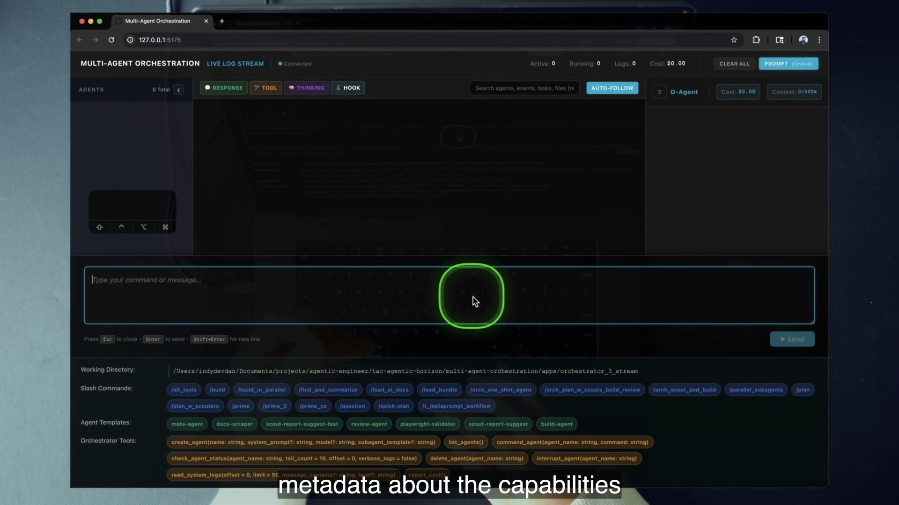
5:00The entire control surface in one frame: one prompt input, the course working directory, the ecosystem’s slash commands, seven agent templates, and all eight management tools.
Source lock. Every claim and lab path in this chapter comes from the AH-4 extract or the shipped agentic-horizon/multi-agent-orchestration repository. The Claude Agent SDK names used by this repo are already current: claude-agent-sdk, ClaudeAgentOptions, and ClaudeSDKClient.
01
The interface becomes the wall
Better agents improve one worker. More agents add workers. Custom agents specialize them. Orchestration arrives when creating and commanding those workers becomes the limiting step.
1 · Hook — concrete failure
Ten terminals, one exhausted operator
Picture ten capable agents, each in its own terminal. The agents can work in parallel, but you have to remember their names, purposes, last commands, current status, costs, context pressure, and outputs. You jump between windows to ask whether each is done. One result must be copied into another prompt. A failed agent looks almost the same as a slow one until you read its transcript. You added compute without adding a control plane.
Dan’s diagnosis is blunt: you cannot scale by hopping into one terminal at a time and writing one prompt at a time. When the rate at which you can create and command agents constrains engineering output, the interface—not the model—is the wall.
2 · Picture — the scale ladder
Each rung solves the previous rung’s constraint
BaseGeneral capability.
BetterHigher-quality single worker.
MoreParallel compute.
CustomDomain specialization.
OrchestratedFleet control through one interface.
Orchestration comes last because it depends on the earlier skills. You cannot coordinate agents well if you cannot first build a useful custom agent or observe what it is doing.
3 · Story — the lesson’s opening move
From scaling compute to scaling command
Dan starts with the agent-scale framework rather than the web application. That ordering matters. The polished UI is not the tactic; it is evidence of a tactic. The learner has already moved from base to better, then to more, then to custom. The next question is no longer “Can I make an agent?” It is “How quickly and reliably can I create, direct, inspect, and retire a fleet?”
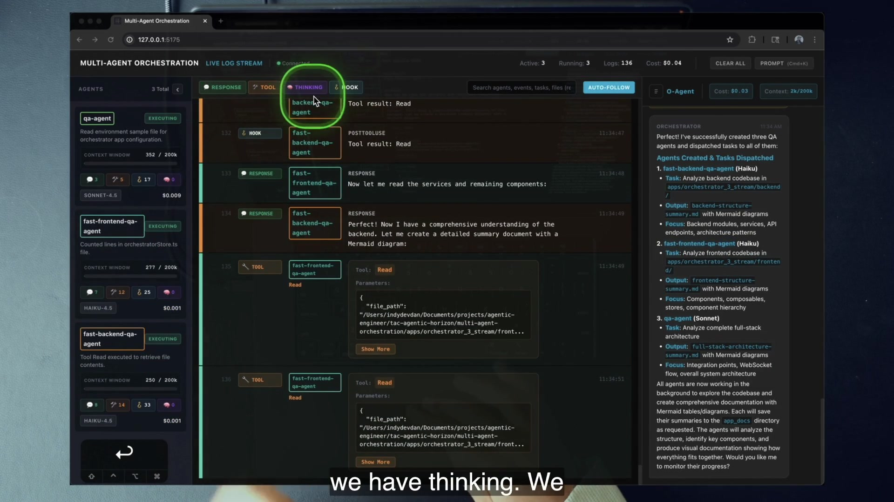
6:42The scale claim becomes concrete: one operator, three focused windows, and a control surface that keeps their roles and state separate.
The phrase “when your agents are slow, you’re slow” connects agent throughput to engineering throughput. But more agents only help if they pursue the right work. Ten wrong agents do not create leverage; they create ten simultaneous sources of noise.
4 · Name it
The agent-scale framework
The framework is diagnostic. If one strong agent cannot complete the job, ask whether you need better instructions, more parallelism, a custom role, or a fleet interface. Jumping straight to orchestration can hide a weak task definition behind infrastructure.
5 · Worked example
One request becomes six lifecycle actions
The demo request asks for frontend, backend, and full-stack architecture summaries. Through Cmd+K, one prompt causes three create_agent calls and three command_agent calls. Two fast agents inspect frontend and backend; a primary agent produces the combined result. The human states the outcome once. The O-agent translates that outcome into fleet lifecycle actions.
The multiplication is real but bounded: three agents have separate model choices, contexts, costs, and event streams. The claim is not that three is always better. It is that one interface can deliberately allocate three focused windows without making the human manually relay every command.
6 · You try — scale diagnosis
Choose the missing rung
Write one engineering task you currently give an agent.
Name the present constraint: quality, throughput, specialization, or coordination.
Choose the lowest rung that solves it.
If you choose orchestration, name at least two distinct roles and the artifact each produces.
Pass if your fleet choice follows from separable work. “I want it faster” is not enough; identify independent contexts or phases.
7 · Common fail + fix
Failure: agent count as a KPI
Symptom: you create ten agents because ten sounds powerful. Their responsibilities overlap, their outputs conflict, and no one owns synthesis.
Fix: move down the ladder until the roles are crisp. Give each agent one purpose and a concrete result. Add orchestration only when the interface and hand-offs are the bottleneck.
8 · Current practice
The ladder is implementation-agnostic
9 · Retrieval
Recite the five rungs.
Reveal answer
Base → Better → More → Custom → Orchestrated.
Why does orchestration come after custom agents?
Reveal answer
Because useful orchestration presumes you can already construct specialized workers and measure their behavior.
What becomes the constraint at the top rung?
Reveal answer
The rate and reliability with which the human can create, command, observe, and retire agents.
10 · Teach-back
Explain in 60 seconds: “More agents” and “orchestrated agents” are not synonyms. Use the six-call demo as your proof.
Pass if you name the interface bottleneck and explain why specialization and observability are prerequisites.
02
One agent to rule the interface—not do the work
The O-agent is a custom meta-agent whose job is lifecycle management. Its value comes as much from what it refuses to do as from the tools it can call.
1 · Hook — the overloaded conductor
The coordinator starts implementing
You ask an orchestrator to create a planner and a builder. It creates neither. Instead it reads the repository, drafts the plan, edits the files, runs tests, and then summarizes its own work. The result may even be correct, but your “orchestrator” is a single overloaded engineer wearing a conductor’s hat. Its context fills with implementation detail, and no independent reviewer exists.
2 · Picture — one interface, many workers
Keep the routing center thin
Human
States one goal and constraints through Cmd+K.
→
O-agent
Creates, commands, checks, interrupts, reports, and deletes. It reduces and delegates.
→
Primary agents
Scout, plan, build, review, and produce durable results in focused windows.
3 · Story — the empty shell
The UI asks for orchestration, not application input
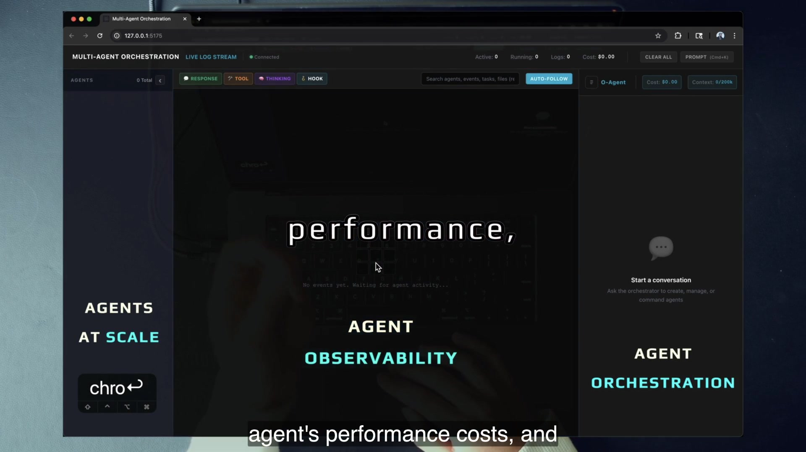
4:18The empty system has zero agents, zero logs, zero cost, and one invitation: ask the orchestrator to create, manage, or command agents.
Dan asks where the input field is because this is not a normal end-user app. The right panel is the engineer’s single interface. Everything else exists to make the fleet’s lifecycle and evidence legible.
4 · Name it
The single interface pattern and the O-agent
The first line of backend/prompts/orchestrator_agent_system_prompt.md gives the role directly. The system prompt is fully overwritten. The management surface is specialized. This is the custom-agent lesson applied one level higher.
Prompt Full custom identity loaded from the orchestrator prompt file.
Model/context Configured model, working directory, and optional resumed session.
Tools The eight-tool mgmt MCP server plus Bash, Read, SlashCommand, and Skill.
The code does not make the O-agent omniscient. It gives the agent a narrow institutional role and explicit handles for delegating work.
6 · You try — boundary test
Sort actions into coordinate or execute
Classify these actions: create a scout, read every frontend file, command a builder, inspect a ten-line status tail, edit AgentList.vue, ask a reviewer for PASS/FAIL, delete completed agents. The O-agent should own creation, command, bounded status, review dispatch, and deletion. Focused agents should own repository analysis and implementation.
7 · Common fail + fix
Failure: the cleverest agent does everything
Symptom: the O-agent performs the engineering because it has Bash and Read. Its context becomes the fleet’s dumping ground.
Fix: enforce role language in the system prompt, produce a focused agent for the actual work, and request only compact status or artifacts. Tools provide capability; the prompt supplies purpose and restraint.
8 · Current practice
The SDK names here are already current
9 · Retrieval
What kind of agent is the O-agent?
Reveal answer
A custom meta-agent with a fully overwritten system prompt and specialized management tools.
What must it deliberately not do?
Reveal answer
The heavy engineering work or exhaustive log reading.
Why is refusal a scaling feature?
Reveal answer
It protects the coordinator’s context and preserves independent focused agents.
10 · Teach-back
Teach the paradox: the O-agent becomes more useful by doing less work itself.
Pass if you connect full prompt overwrite, eight management tools, and context protection.
03
The system stands on three pillars
A chat box is not orchestration. A CRUD API is not orchestration. A log dashboard is not orchestration. The lesson’s system emerges only when one interface, lifecycle control, and evidence work together.
1 · Hook — remove one pillar
A fleet you can start but cannot see
Suppose the O-agent can create and command ten agents, but you cannot see what any of them read, wrote, cost, or returned. You have automation without control. Now suppose the dashboard is beautiful, but agents cannot be re-commanded or deleted. You have telemetry without lifecycle management. Finally, imagine CRUD and logs without a single interface: the human is still manually wiring every transition.
2 · Picture — the three-pillar structure
Each pillar answers a different control question
1 · Orchestrator Agent
Where do I state the goal? One interface translates intent into fleet actions.
2 · CRUD-for-agents
How do I control lifecycle? Create, read/check, update/command, interrupt, and delete.
3 · Observability
How do I know what happened? Events, state, cost, context, files, diffs, and results.
3 · Story — one prompt lights all three
The empty shell becomes a running fleet
6:42One prompt becomes three agents. The left rail exposes model, cost, context, and event counts; the center filters live activity; the right records the orchestrator’s dispatch.
This frame is the system’s “aha.” The O-agent accepts the request. CRUD creates and commands the agents. Observability makes each agent’s execution and result visible. The three pillars are not architectural decoration; they are three simultaneous user capabilities.
4 · Name it
Multi-agent orchestration
“Agents at scale” means more than fan-out. Control includes changing course, deciding when an agent is done, seeing the cost of the decision, and removing the temporary resource when its purpose is complete.
5 · Worked example — the eight-tool CRUD
Turn the acronym into actual handles
Createcreate_agentcommand_agent
Create a worker and create or update its task.
Readlist_agentscheck_agent_status
Read lifecycle and compact recent activity.
Observeread_system_logsreport_cost
Read system evidence and orchestrator accounting.
Delete / interruptdelete_agentinterrupt_agent
End a resource or stop its current execution.
CRUD is a teaching shorthand, not a perfect REST taxonomy. command_agent creates a task and updates the ongoing agent; interrupt_agent changes runtime state while also acting as a destructive lifecycle control.
6 · You try — missing-pillar drill
Diagnose three systems
A CLI launches agents but offers no status: name the missing pillar.
A dashboard displays logs but cannot re-command a worker: name the missing pillar.
An API exposes lifecycle endpoints but every call is manual: name the missing pillar.
Answers: observability, CRUD/update control, and the orchestrator/single interface.
7 · Common fail + fix
Failure: “we have logs, so we have observability”
Symptom: raw terminal text exists somewhere, but it cannot be filtered by agent, tied to files, or converted into a review decision.
Fix: define evidence a conductor can act on: status, model, context, cost, response/tool/thinking/hook events, consumed files, produced diffs, and a durable final result.
8 · Current practice
Build the thinnest interface that preserves all three
9 · Retrieval
Name the three pillars.
Reveal answer
Orchestrator Agent, CRUD-for-agents, and Observability.
What breaks without CRUD?
Reveal answer
You cannot deliberately manage the fleet’s lifecycle at scale.
What breaks without observability?
Reveal answer
You cannot know which agent did what, whether it worked, or whether the fleet is worth its cost.
10 · Teach-back
Draw the three pillars from memory. Under each, write the user question it answers.
Pass if the answers are input/coordination, lifecycle control, and reviewable evidence.
04
Observability is the control surface
At fleet scale, “it looks busy” is not evidence. You need to know who acted, what they consumed, what they produced, how much it cost, and where to inspect the result.
1 · Hook — ten agents doing the wrong thing
Activity masquerades as progress
A center panel fills with events. Tool calls flash by. Token counts rise. The fleet feels productive. Yet the builder edited the wrong component, the scout read legacy code, and the reviewer verified a different path. Without per-agent evidence, more activity only makes the failure harder to locate.
Dan’s couplet is the operational standard: if you cannot measure it, you cannot improve it; if you cannot measure it, you cannot scale it.
2 · Picture — evidence pipeline
From runtime event to a decision you can make
Agent runtime
SDK messages and hooks emit response, tool, thinking, stop, and file activity.
→
Persistence + stream
Postgres stores agent/system/chat records; WebSocket events update the live client.
→
Review surface
Pinia-backed UI filters events, shows status/cost/context, and exposes artifacts and diffs.
3 · Story — consumed versus produced
The result outlives the scrolling transcript
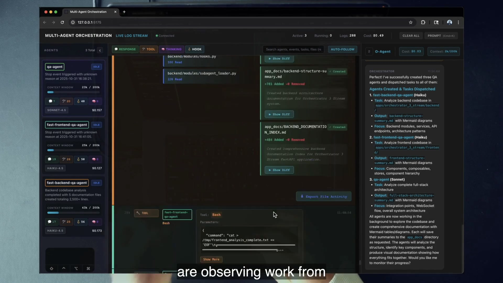
11:30The Review end of the system: consumed source on one side, produced documents with green diff statistics and Show Diff controls on the other.
The view answers more than “done?” It tells you which files supplied context and which files contain the result. The agent can disappear later; the architecture document remains inspectable. One-click opening and inline diffs let the human enter the loop only at the point of judgment.
4 · Name it
Agent observability
The course system tracks response, tool, thinking, and hook categories; per-agent status; tokens and cost; context; prompts; system logs; chat; and file activity. A fast model generates short event summaries so the O-agent or human can inspect a bounded tail instead of swallowing raw history.
5 · Worked example — debug “who broke it?”
Move from symptom to responsible agent
Filter the EventStream to the builder’s chip.
Select TOOL events and search for the target component path.
Open the produced file and its diff.
Compare consumed files with the intended scope.
Check the reviewer’s response and hook/Stop sequence.
Re-command, interrupt, or replace the agent based on evidence.
This is why the central question is not “Did an agent run?” It is “Which agent made which change from which context, and what did independent review conclude?”
6 · You try — evidence sentence
Write a falsifiable run summary
Use this template after a lab run: “Agent name, using model, consumed files, produced artifact/diff, cost amount, stopped after signal, and passed/failed because review evidence.” If you cannot fill a field, identify the missing observability path.
7 · Common fail + fix
Failure: make the O-agent read everything
Symptom: to stay informed, the coordinator reads complete logs for every worker. The observability pillar exists, but its use destroys coordinator context.
Fix: use summaries, bounded tails, filters, artifacts, and status. Observability should reduce uncertainty without copying the whole fleet into one prompt.
8 · Current practice
Trust active code over stale documentation
9 · Retrieval
Complete the measurement couplet.
Reveal answer
If you cannot measure it, you cannot improve it; if you cannot measure it, you cannot scale it.
Name four event filters.
Reveal answer
Response, Tool, Thinking, and Hook.
Why separate consumed from produced?
Reveal answer
It shows the evidence an agent read and the durable result it created, making review and hand-off possible.
10 · Teach-back
Explain to a skeptical teammate: why is observability one third of orchestration rather than an optional operations feature?
Pass if you connect measurement to control, diagnosis, cost, artifacts, and safe out-loop review.
05
Promote templates into primary agents
The managed workers are not blind, one-shot Task calls. Each receives its own SDK client and session, can be re-commanded, and remains visible as an addressable resource until the O-agent archives it.
1 · Hook — “aren’t these just sub-agents?”
The one-shot worker vanishes too early
A scout returns a useful partial answer, but you need it to check one more path. With an ephemeral sub-agent, the narrow execution is over and its working context is gone. You can launch another scout, but you cannot address the original worker, ask a dependent follow-up, or inspect its ongoing lifecycle as a first-class resource.
That limitation is not always bad. Ephemeral sub-agents are excellent for bounded delegation. The O-agent system chooses a different primitive because orchestration needs workers that can survive across multiple commands and expose their own state.
2 · Picture — two worker lifecycles
Ephemeral call versus addressable session
Task sub-agent
Created for one narrow execution.
Returns a result to its parent.
Context is not an addressable fleet resource.
Useful when one bounded answer is enough.
Managed primary agent
Own ClaudeSDKClient and session ID.
Visible card, status, cost, events, and artifacts.
Re-commanded through resume=session_id.
Can run commands, skills, and its own delegations.
3 · Story — template pulled up a level
A reusable definition becomes a persistent worker
The demonstration calls create_agent(subagent_template="scout-report-suggest-fast"). The loader resolves a file under .claude/agents/, uses its prompt and model to mount a fresh client, and stores the session. Later, command_agent resumes that session. The template came from the sub-agent ecosystem, but the runtime gives it primary-agent lifecycle.
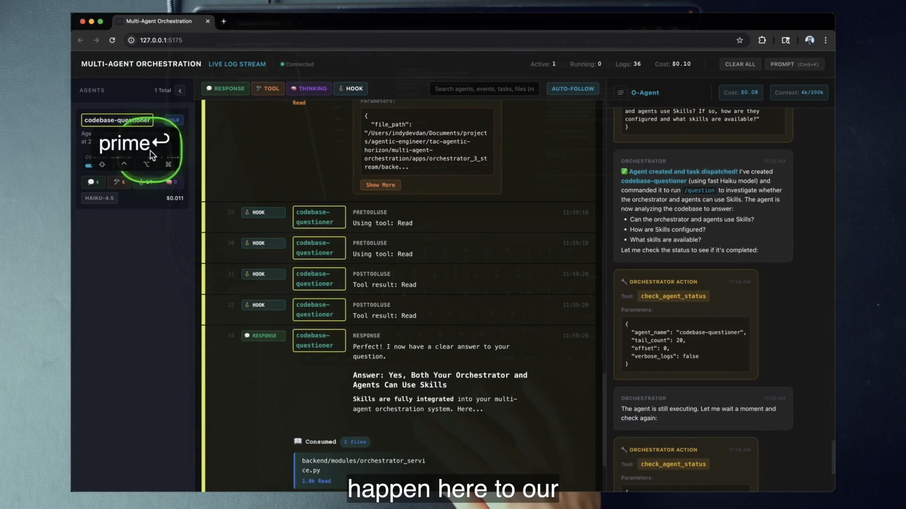
24:05The managed codebase-questioner runs /question; the answer confirms that orchestrator and agents can use skills, while /prime is ready in the single input.
4 · Name it
Primary agent versus sub-agent
The distinction is about runtime and control, not the markdown file alone. The same template text can inform an ephemeral sub-agent or seed a primary agent; the session, client, observability, and command surface create the difference.
5 · Worked example — the template fleet
Seven roles, three featured in the workflow
Template
Declared model class
Declared job
Course use
scout-report-suggest-fast
Haiku
Fast scout; frontmatter declares Read, Glob, Grep
Read and produce a scout report
scout-report-suggest
Sonnet
Deeper scout
More thorough repository reading
build-agent
Sonnet
Implement from a specification
Build phase
review-agent
Sonnet
Diff review and PASS/FAIL
Review phase
meta-agent
Opus
Design agent definitions
Agent architect
docs-scraper
Haiku
Collect documentation
Write into ai_docs/
playwright-validator
Sonnet
Browser validation
Drive and inspect the UI
6 · You try — prove persistence
Ask a dependent follow-up
Create a uniquely named agent from scout-report-suggest-fast.
Command it to inspect one slice of the codebase.
After the response, re-command the same name with a question that depends on the first result.
Verify the UI retains one card/session rather than creating a second worker.
Compare its declared template tools with the tools visible during resumed execution.
7 · Common fail + fix
Failure: confuse declared tools with enforced tools
Symptom: you call the fast scout “read-only” because its frontmatter lists three read tools, then resumed execution exposes broader tools.
Fix: trace both creation and command paths. In this repository, creation applies template declarations, while the command/resume path widens the allowlist. Record the gap; do not repair it by hand during the core lab.
8 · Current practice
Use runtime evidence for capability claims
9 · Retrieval
Give two abilities of a managed primary agent.
Reveal answer
It can be re-commanded with its prior session and remains an independently observable resource; it can also run reusable commands/skills and produce durable artifacts.
What “pulls a template up a level”?
Reveal answer
Creating a fresh SDK client/session from the template and managing it as an addressable primary agent.
Why is the fast scout not reliably read-only here?
Reveal answer
The current command/resume path rebuilds options with a broader default tool allowlist than the template declares.
10 · Teach-back
Explain without saying “better”: how does a primary agent differ operationally from an ephemeral sub-agent?
Pass if you mention independent session, re-prompting, observability, and an artifact that survives the worker.
06
Manage the core four at fleet scale
The fleet does not introduce a new kind of intelligence. It repeats the same four controls—context, model, prompt, tools—across many agents, while protecting the one context that coordinates them.
1 · Hook — the omniscient coordinator
The O-agent reads every transcript
You want the coordinator to be informed, so you feed it every scout note, tool call, reasoning block, diff, and review log. Soon the O-agent’s context contains three agents’ implementation detail plus its own orchestration history. It can no longer tell which facts are current. The single interface remains, but its perspective is polluted.
2 · Picture — four controls, repeated
Every card is the same diagnostic lens
Context
Working directory, project settings, session history, and selected evidence.
Model
Fast class for scouts/summaries; primary class for planning, building, reviewing; high-capability class for meta-agent design.
Management MCP for the O-agent; role-specific or current default surfaces for managed agents.
3 · Story — Dan names the view
All the UI is “just the core four”
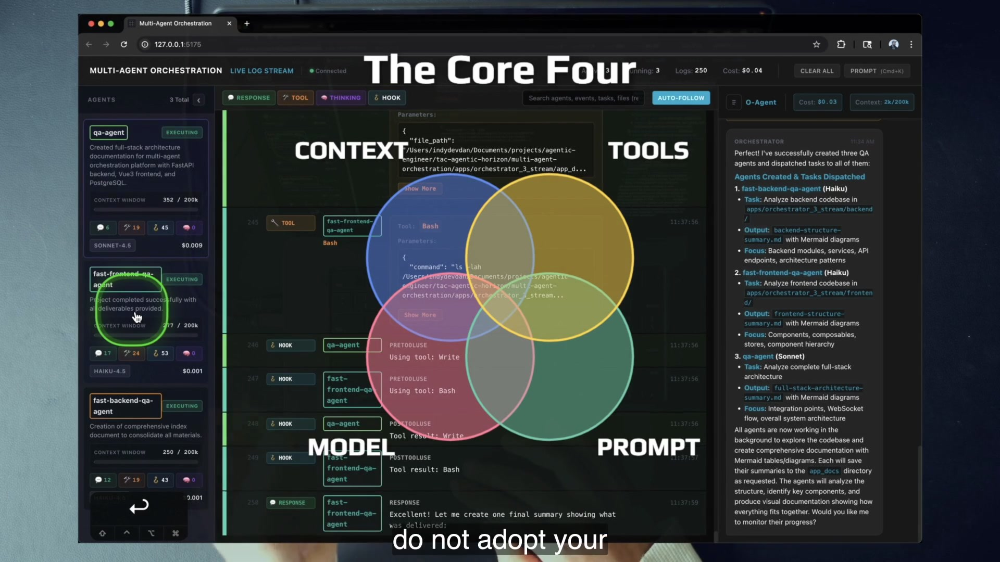
8:48The four-circle model sits over the live fleet. Model badges and context bars make the same reading lens visible at agent scale.
The interface reports context against a 200k denominator, model badge, cost, and activity. That 200k value is a course UI/reporting assumption rather than an explicit ClaudeAgentOptions field in this repository. The actual context mechanics include the working directory, project setting sources, prompts, tool definitions, messages, and resumed session.
4 · Name it
Core four at scale + R&D
The orchestrator prompt sets a compact threshold of 80 percent and can suggest commanding an agent with /compact. More important than the number is the design: the coordinator asks for status and results rather than importing all raw work.
5 · Worked example — match model to job
Allocate capability across the fleet
High-volume, narrow reading
The fast scouts, documentation collector, and event summaries use the Haiku-class model in the course configuration. Their work is scoped, repeated, and mostly read/summarize shaped.
Primary engineering and judgment
The O-agent, planner, builder, reviewer, and primary worker use the Sonnet-class model. The meta-agent template uses Opus for agent architecture. Exact pinned IDs are period detail; the lesson is task-to-model matching.
The code’s source of truth is config.py: DEFAULT_MODEL and FAST_MODEL. The orchestrator system prompt still contains an older Haiku documentation line. Trust active resolution code and on-screen badges over the stale prompt note.
6 · You try — core-four worksheet
Read two agents side by side
For the O-agent and one managed scout, record: context inputs and session continuity; model source; prompt source; tools declared and tools actually mounted. Circle every difference. Then write one sentence explaining why the O-agent should know less implementation detail than the scout.
7 · Common fail + fix
Failure: context percentage as the whole story
Symptom: a low context bar is treated as proof of clean context, or a high bar as automatic failure.
Fix: inspect composition and role. The O-agent should carry compact status and decisions; a planner may legitimately consume many source files. Context quality is relevance and isolation, not only a percentage.
8 · Current practice
Model IDs drift; allocation principles last
9 · Retrieval
Name the core four.
Reveal answer
Context, model, prompt, and tools.
Which two R&D verbs protect the O-agent?
Reveal answer
Reduce and Delegate.
Where does the displayed 200k value come from?
Reveal answer
The course UI/reporting code visualizes usage against 200k; this repo does not pass a 200k option in ClaudeAgentOptions.
10 · Teach-back
Teach the fleet through four questions: what does each agent know, which model works, what is its law, and what can it do?
Pass if your coordinator answer includes deliberate ignorance through Reduce and Delegate.
07
PITER keeps you out of the loop without abandoning review
Out-loop work is not hope-driven autonomy. Prompt input enters through a trigger, agents operate inside a bounded environment, and observability gives the human a review surface.
1 · Hook — unattended or unreviewed?
The false choice between babysitting and blind trust
Some engineers stay glued to every token because they equate absence with risk. Others launch a fleet and walk away because they equate autonomy with maturity. Both miss the system. Staying out of the loop means the human does not manually carry every transition. It does not remove acceptance criteria, evidence, or a final judgment.
2 · Picture — the four-stage out-loop map
Input, trigger, environment, review
PPrompt inputCmd+K message stating goal and constraints.
TTriggerPOST /send_chat reaches FastAPI and background execution.
EEnvironmentThe configured working directory and project setting sources.
RReviewWebSocket/DB-backed events, status, files, diffs, and reports.
3 · Story — the system builds itself
A prompt crosses real application boundaries
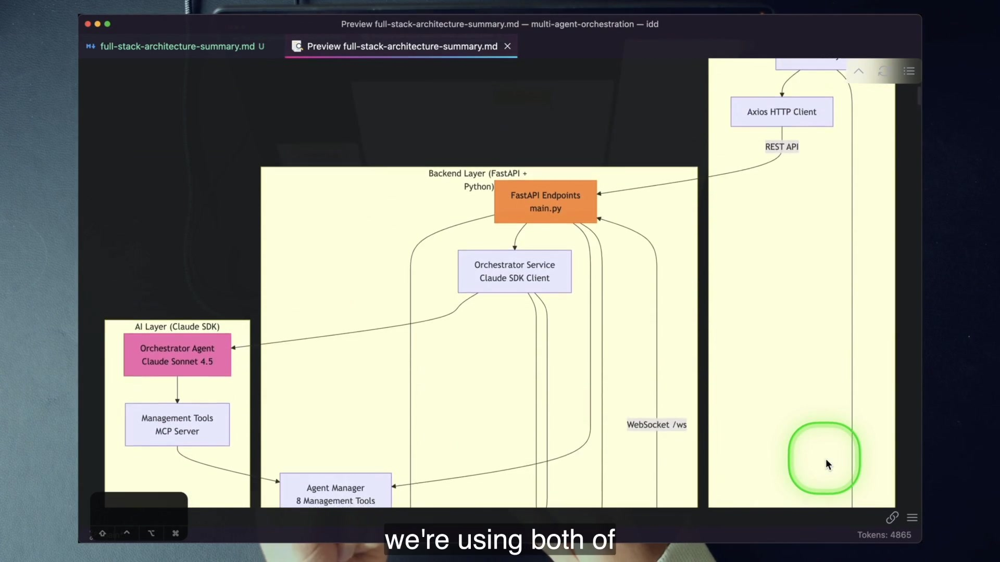
10:36An agent-generated architecture map of the system it just inspected: browser → FastAPI → Orchestrator Service → O-agent → management MCP → Agent Manager, with WebSocket streaming back.
The application targets its own apps/orchestrator_3_stream directory, so the demo literally uses the system to build the system. The prompt enters through HTTP, background work runs against the configured directory, and the result returns through persistence and the live event stream.
4 · Name it
PITER, tactic four
The associated tactic is Stay Out the Loop. “Review” keeps the phrase honest: the human changes position from continuous relay operator to evaluator at meaningful checkpoints.
5 · Worked example — map one request
Architecture summary through PITER
Out-loop execution
P: request frontend/backend/full-stack summaries.
T: one chat request launches O-agent execution.
E: three primary agents read the course app directory.
Human review
R: inspect each agent’s status, consumed sources, produced architecture markdown, cost, and diff. Enter the file only when judgment is useful.
The system carries transitions; the human still decides whether the architecture account is correct.
6 · You try — map your environment
Make every PITER stage concrete
Choose one orchestration-shaped task. Write the exact input, the event or endpoint that triggers it, the directory and permissions that define its environment, and the evidence required for review. If your R stage says only “read the answer,” add a diff, test, artifact, cost, or independent reviewer.
7 · Common fail + fix
Failure: out of the loop becomes out of control
Symptom: the trigger launches work, but the environment is broad and the review criterion is “looks okay.”
Fix: bind the working directory, specify artifacts, record consumed and produced files, and require a reviewer or deterministic check. Review is designed before launch, not improvised after surprise.
8 · Current practice
This reference implementation is one PITER mapping
9 · Retrieval
Expand PITER.
Reveal answer
Prompt input → Trigger → Environment → Review.
Which tactic does it operationalize?
Reveal answer
Tactic four: Stay Out the Loop.
Why is “Peter” absent from the repo?
Reveal answer
It is a transcript artifact for the conceptual acronym PITER, not a code identifier.
10 · Teach-back
Teach PITER using the course app. Do not use generic definitions; name the request, endpoint, directory, and review evidence.
Pass if Review is concrete enough to reject a bad result.
08
One agent, one prompt, one purpose—then archive it
The fleet is a pool of temporary focused resources, not a collection of immortal coworkers. Preserve the result, retire the worker, and use a fresh name and window for the next purpose.
1 · Hook — context hoarding
The agent that never goes home
A useful scout becomes a planner, then a builder, then a reviewer. Each new task inherits irrelevant source, old assumptions, and earlier instructions. You keep it because the session feels valuable, but its accumulated context makes it harder to predict. The 200k display looks spacious until the worker carries five jobs and cannot tell which role governs the next command.
2 · Picture — disposable worker, durable work
Separate resource lifetime from artifact lifetime
Temporary agent
One protected context, one prompt, one purpose, one lifecycle. Create → command → inspect → archive.
Persistent result
Scout report, plan, implementation diff, review report, logs, and cost evidence remain available after the agent leaves the visible fleet.
3 · Story — delete all agents
The empty rail is a successful end state
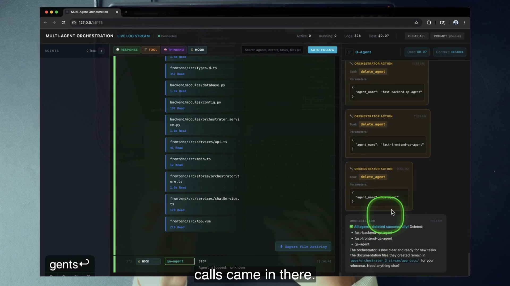
19:03Three delete_agent actions clear the visible fleet. The produced documentation remains; the temporary compute has finished its purpose.
Dan connects deletion to engineering maturity: eventually you learn that the best code can be no code. Agents deserve the same discipline. Retaining a polluted session because it once helped is not thrift; it is deferred confusion.
4 · Name it
One agent, one prompt, one purpose
In the course database, “delete” is implemented as a soft archive: archived = true. It removes the agent from the active fleet but does not physically delete the row. That distinction matters operationally.
5 · Worked example — lifecycle with a suffix
Create, re-command, retire, never recycle the name
Create backend-scout-k7 for one architecture report.
Re-command it only to clarify that same report.
Confirm the artifact exists under app_docs/.
Ask the O-agent to delete it; observe that it disappears from active cards.
For the next run, use backend-scout-m2, not the archived name.
The migrations enforce uniqueness on (orchestrator_agent_id, name) even for archived rows. A deleted name remains reserved. Unique suffixes turn that repo constraint into predictable lab hygiene.
6 · You try — define the purpose boundary
Write the deletion condition before launch
For one planned agent, complete: “This agent exists to produce ____ from ____. I may re-command it only to clarify ____. I will archive it when ____ proves complete.” A good answer names a file or review verdict, not a feeling.
7 · Common fail + fix
Failure: reuse an archived name
Symptom: creation fails even though the old agent no longer appears in the rail.
Fix: recognize soft archive plus the non-partial uniqueness constraint. Generate a fresh suffix. Do not confuse absence from the active UI with physical deletion from Postgres.
8 · Current practice
Lifecycle semantics belong in the contract
9 · Retrieval
State the three-part focus rule.
Reveal answer
One agent, one prompt, one purpose.
What survives retirement?
Reveal answer
Produced artifacts, database/log evidence, and costs; the agent leaves the active fleet.
Why can’t the same name be reused?
Reveal answer
Delete is a soft archive, and the database uniqueness constraint still includes archived rows.
10 · Teach-back
Explain why deleting an agent can increase reliability. Include context pollution, artifact persistence, and the repository’s archive semantics.
Pass if you do not claim the database row is physically removed.
09
Every agent produces a concrete result
The artifact is the hand-off boundary between temporary compute and durable engineering. It makes out-loop review possible and reveals whether your own specialization is actually encoded.
1 · Hook — the impressive conversation
The scout “understands” the codebase but leaves nothing
An agent reads hundreds of lines, explains its thinking in the event stream, and finishes with “I have a good understanding.” The run consumed time and tokens, but the builder receives no structured report, the human has nothing stable to review, and deletion would erase the only convenient handle on the insight. Activity without a result is not a hand-off.
2 · Picture — knowledge becomes an asset
Consumed evidence → specialized work → produced artifact
Agent lifetime
Read bounded source, follow a role-specific prompt, use the appropriate model and tools, and record observable execution.
Artifact lifetime
Write a scout report, plan, code diff, architecture document, or review verdict in the structure the next consumer expects.
3 · Story — the scout report lands
A focused agent hands work to the next phase
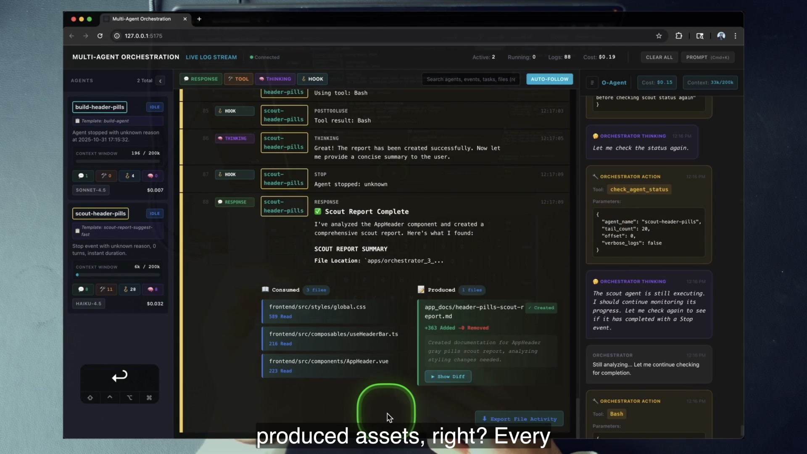
35:48The scout’s result is explicit: a completed report, its consumed Vue/CSS sources, and a produced app_docs/header-pills-scout-report.md. The O-agent checks status while the builder waits.
The report follows a dedicated structure because the engineering has been templated into the scout’s prompt. The artifact is not incidental output; it is the contract between the scout phase and the builder phase.
4 · Name it
Results-oriented engineering and templating your engineering
The app shell is reproducible. Your moat is the specialized engineering loaded into prompts, templates, tools, report formats, and review criteria. If an out-of-the-box prompt can reproduce the entire advantage with no domain investment, the advantage is not very defensible.
5 · Worked example — a defensible report contract
Make “summarize the backend” operational
Suggested contract using the course’s existing report pattern
SCOUT REPORT
- Scope: backend orchestration lifecycle
- Sources consumed: exact repository paths
- Core-four findings: context, model, prompt, tools
- Lifecycle findings: create, command, status, archive
- Risks/gaps: evidence with paths
- Handoff: what the builder or reviewer should do next
- Output: app_docs/<task>-scout-report.md
Bounded The scope prevents “understand the whole repo.”
Traceable Exact consumed paths let a reviewer audit claims.
Composable The next role receives a predictable artifact.
This structure does not invent a new application feature; it applies the course’s demonstrated dedicated scout-report idea to the same course repository.
6 · You try — artifact-first prompt
Specify the result before the work
Rewrite “look at the filtering code” as an artifact contract. Name the exact output path, the source paths or bounded search surface, required sections, and the consumer. Your agent prompt is complete only when another agent could use the result without reading the transcript.
7 · Common fail + fix
Failure: output exists but is not a hand-off
Symptom: the agent writes a long markdown diary with no source paths, decision, or next step.
Fix: template the result around its consumer. A builder needs constraints and target files; a reviewer needs acceptance criteria and changed paths; a human needs evidence and a verdict.
8 · Current practice
Artifacts make heterogeneous tools interoperable
9 · Retrieval
Why must every agent produce a result?
Reveal answer
So its work is inspectable, hand-off ready, and durable after the temporary agent is archived.
Where does defensibility come from?
Reveal answer
The specialized engineering encoded in prompts, tools, templates, workflows, structures, and review criteria—not the generic app shell.
What makes a report composable?
Reveal answer
A bounded scope, traceable evidence, predictable structure, and a named next consumer.
10 · Teach-back
Explain the statement: “The agent is temporary; the engineering is in the artifact and template.”
Pass if you connect artifact lifetime, hand-offs, review, and specialization.
10
The O-agent is glue for the existing ecosystem
Templates, slash commands, skills, hooks, and the Agent SDK do not disappear at fleet scale. The O-agent composes them into orchestration prompts that create and monitor multi-phase work.
1 · Hook — rebuild everything for orchestration
A new control plane becomes a new island
You invest in custom agents, commands, skills, and hooks. Then you build an orchestrator that can only send raw prompts to anonymous workers. Your best engineering assets sit outside the fleet, and every workflow must be reimplemented inside the app. The control plane added scale by discarding reuse.
2 · Picture — existing assets plug into the fleet
One coordinator, many reusable surfaces
Agent templates
Seed scout, builder, reviewer, browser validator, docs, and meta-agent roles.
Commands + skills
Managed agents can run reusable /question, /prime, and model-invocable workflows.
Hooks + streams
Observe lifecycle and file activity; apply the same governance and event patterns.
3 · Story — plan, build, review
Three primary agents appear up front
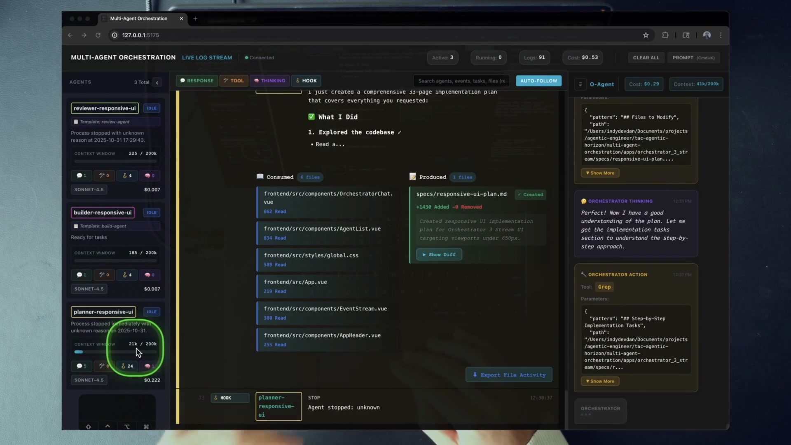
43:45The ADW-shaped workflow: a dynamic planner with no template badge, a build-agent builder, and a review-agent reviewer. The plan is a durable file under specs/.
The O-agent does not pass an opaque hidden context from one worker to the next. It creates the roles, commands the appropriate phase, waits, checks completion evidence, and uses produced artifacts to connect the work. That is why Dan calls it glue.
4 · Name it
Ecosystem interoperability, orchestration prompts, and ADWs
The planner is dynamic—its prompt is built for the task and it has no committed agent template. The builder and reviewer use reusable templates. This contrast shows that a workflow can combine static institutional roles with task-specific roles.
5 · Worked example — prompt-driven sleep-check
The monitoring loop lives in markdown
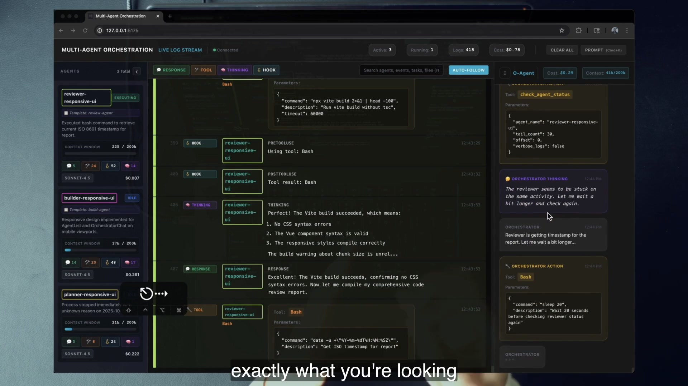
53:35The reviewer verifies the Vite build while the coordinator visibly runs Bash sleep 20 and prepares another check_agent_status call.
SLEEP_INTERVAL: 15 seconds
repeat:
Bash(sleep 15)
check_agent_status(agent_name, tail_count, ...)
until:
response event_category
followed by hook Stop
Prompt-driven The loop is orchestration behavior, not hidden scheduler code.
Bounded evidence Status tails protect coordinator context.
Completion Response followed by Stop closes the observed phase.
The frame uses a 20-second sleep in the live run; the command declares a 15-second interval. The lesson is not the exact duration. It is that readable orchestration instructions supply the glue.
6 · You try — trace the workflow
Open the prompt before running it
Find the planner, builder, and reviewer creation instructions.
Locate SLEEP_INTERVAL, Bash(sleep), and check_agent_status.
Find the response-then-Stop completion condition.
Name every produced artifact that crosses a phase boundary.
Predict what the O-agent will do if the reviewer remains executing.
7 · Common fail + fix
Failure: assume the monitor is hidden machinery
Symptom: you search Python for a 15-second polling service, cannot find it, and decide the behavior is magical.
Fix: read the workflow command. The O-agent follows prompt instructions to sleep and call its own status tool. Change the orchestration behavior where it is encoded.
8 · Current practice
Preserve inspectable orchestration
9 · Retrieval
Name the three main phases.
Reveal answer
Plan → Build → Review, followed by a report.
Which roles use templates?
Reveal answer
Builder uses build-agent and reviewer uses review-agent; the planner is dynamic with no static template.
How does the monitor loop work?
Reveal answer
The workflow prompt directs Bash sleep followed by check_agent_status until response and Stop evidence indicate completion.
10 · Teach-back
Explain why the O-agent is “glue.” Use one static template, the dynamic planner, one artifact, and the sleep-check loop.
Pass if the coordinator connects phases without doing their engineering work.
11
Build the agentic layer honestly—in the gray
The O-agent is both part of the agentic layer and a tool for discovering how that layer should be organized. It offers leverage now, while carrying real infrastructure cost and acknowledged missing pieces.
1 · Hook — wait for the finished future
The perfect out-loop system never arrives
You postpone orchestration until it has deterministic workflows, human approval gates, context forking, multi-codebase control, prompt autocomplete, flawless agent management, and zero maintenance. The requirements describe a mature platform, so no experiment survives long enough to teach you which parts your codebase actually needs.
The opposite mistake is equally damaging: present a custom demo as a universal finished product. Dan refuses both extremes. The system is useful, expensive, incomplete, and worth learning from.
2 · Picture — value versus carrying cost
The O-agent lives inside a larger investment decision
Leverage gained
One interface for a fleet.
Reusable custom roles and workflows.
Out-loop review with evidence.
A practical way to organize the agentic layer.
Cost accepted
Orchestrator and worker token spend.
Postgres, backend, WebSocket, and UI maintenance.
Prompt and template drift.
Incomplete human and deterministic integration.
3 · Story — the chapter’s honest ending
Prioritize agentics, then name the missing piece
Dan gives a rough guideline: spend more than 50 percent of your time investing in the agentic layer—the system that builds the system. In the same closing sequence, he names the biggest missing piece: broader integration with deterministic AI Developer Workflows. The lesson’s plan/build/review orchestration prompt is ADW-shaped, but the complete deterministic layer is future work.
53:35The gray is visible: independent verification succeeds while the coordinator still has to wait, inspect status, and reason about whether the reviewer is stuck.
Other absent features are explicit: human-in-the-loop decision points, better management across multiple codebases, context forking, and prompt autocomplete. These belong in a “not built yet” ledger, not a feature list.
4 · Name it
Prioritize agentics and operate in the gray
5 · Worked example — orchestrate or stay single
Use task shape, not ambition
Choose a fleet
A repeated change requires independent repository scouting, a durable plan, implementation, and a separate PASS/FAIL review. Each phase has a clean artifact, parallelizable context, and enough recurrence to repay orchestration.
Choose one in-loop agent
You are exploring an ambiguous UI idea and expect rapid back-and-forth. Roles would overlap, the target changes every few minutes, and the infrastructure would cost more attention than it removes.
6 · You try — judgment ledger
Write both sides before building
For one real task, list: separable roles, expected artifacts, recurrence, review needs, token/runtime cost, infrastructure dependencies, and what remains human. Decide fleet or single agent. A valid “no” is expert behavior when the work is exploratory, generic, or tightly interactive.
7 · Common fail + fix
Failure: confuse “more than 50%” with a universal budget
Symptom: the rough guideline becomes an accounting mandate, detached from team maturity or system value.
Fix: keep it as Dan’s prioritization heuristic: invest substantially in the system that builds the system. Track whether that investment removes recurring coordination, improves evidence, and increases reliable throughput.
8 · Current practice
Publish the “not yet” ledger beside the architecture
9 · Retrieval
What is the rough time-investment guideline?
Reveal answer
More than 50 percent on the agentic layer, presented as a rough guideline.
What is the biggest named missing piece?
Reveal answer
Broader integration with deterministic AI Developer Workflows.
Name two other missing features.
Reveal answer
Human decision points, multi-codebase management, context forking, or prompt autocomplete.
10 · Teach-back
Give a two-minute investment pitch with a dissent paragraph. Explain why the O-agent is worth building, then name the costs and features it does not have.
Pass if your pitch would let a teammate choose “not yet” without misunderstanding the lesson.
12
Graded lab: conduct the course codebase
You will bring up the real six-table system, source-trace the O-agent, fan out three persistent agents from one prompt, diagnose them through observability, retire them, and run a documentation-only plan → build → review workflow. Every action and artifact stays inside the shipped course repository.
Time box
120–180 minutes. Setup depends on Postgres, psql, UV, Bun, Node, Claude, and valid credentials.
Grading
100 points. A pass requires 80 points plus every safety-critical checkpoint marked required.
Prime directive
Managed work is dispatched through Cmd+K. You do not hand-run or hand-fix a worker.
Part 0 · Infrastructure10 points · 25–35 min · required
Establish the six-table system
Start at the lesson symlink so you know you are inside the assigned course codebase:
cd IndyDevDan/ah-4-multi-agent-orchestration-the-o-agent/codebase
uv --version
claude --version
node --version
bun --version
psql --version
test -f .env || cp .env.sample .env
# Edit .env: set ANTHROPIC_API_KEY and DATABASE_URL. Do not print them.
cp .env apps/orchestrator_3_stream/.env
uv run apps/orchestrator_db/run_migrations.py
The migration runner reads the repository-root .env. The backend reads apps/orchestrator_3_stream/.env. Those are different lookup paths; both files matter. The current migration runner does not require a copy under apps/orchestrator_db/.
Optional ecosystem setup: if you plan to use the configured Playwright, Neon, or Firecrawl MCP servers during the stretch work, copy .mcp.json.sample to .mcp.json and configure those services. The core O-agent lab does not require them.
Build the actual frontend before launching it:
cd apps/orchestrator_3_stream/frontend
bun install --frozen-lockfile
bun run build
cd ..
./start_be.sh --cwd "$PWD"
In a second terminal, from apps/orchestrator_3_stream:
./start_fe.sh
# From a third shell or after backgrounding the server:
curl -fsS http://127.0.0.1:9403/health
Open http://127.0.0.1:5175. Starting from the app directory with --cwd "$PWD" is important because that project layer contains the templates, commands, and skill used by the exercise.
Checkpoint 0 · 10/10
Migration output applies nine migrations and exposes six tables: orchestrator_agents, agents, prompts, agent_logs, system_logs, orchestrator_chat. Health JSON reports healthy, the UI opens on 5175, and the connection indicator is green.
Part 1 · Source trace15 points · 20 min · required
Read the O-agent’s core four and all eight tools
From apps/orchestrator_3_stream, use repository search instead of relying on the UI:
Context:cwd, optional resume, and project setting sources; note that 200k is a UI/reporting denominator.
Model:config.ORCHESTRATOR_MODEL, whose default resolves through DEFAULT_MODEL.
Prompt:_load_system_prompt() loads the overwritten meta-agent identity and injects the available template map.
Tools: eight mcp__mgmt__* tools plus Bash, Read, SlashCommand, and Skill.
Then copy the eight-tool table above from memory and add parameters. Treat interrupt_agent as lifecycle management; do not force it into a misleading literal database CRUD label.
Checkpoint 1 · 15/15
Your worksheet points to exact source files, names all eight tools and parameters, and explains why the O-agent’s fully overwritten prompt makes it a custom meta-agent rather than a general coding agent.
Part 2 · Fan-out15 points · 20–30 min · required
Create and command three primary agents from one prompt
Choose a unique short suffix such as today’s initials plus four digits. Use it everywhere because archived names remain reserved. Through Cmd+K, send:
Create and immediately command three agents for this course codebase.
Create frontend-scout-<suffix> and backend-scout-<suffix> from the
scout-report-suggest-fast template. Create architecture-writer-<suffix>
from the build-agent template. The scouts should report the frontend and
backend architecture respectively. The writer should inspect the O-agent's
core-four implementation and create exactly:
app_docs/o-agent-core-four-audit-<suffix>.md
The audit must cite every course source path it uses.
Expect at least three create_agent calls and three command_agent calls. Do not grade “exactly six” because the model may legitimately add status or listing calls. Observe two Haiku-class scout badges and one Sonnet-class writer badge, three cards, and three separate sessions.
While the run is active, point at each card’s reported model, context bar, cost, and event counters. Then open the writer’s artifact and verify that its cited paths exist.
Checkpoint 2 · 15/15
One human prompt produces at least three create and three command actions, three independently observable sessions, and the exact audit artifact. Deduct 3 if the artifact lacks traceable course paths; fail the checkpoint if you manually launched a worker.
Part 3 · Observe + lifecycle15 points · 20 min · required
Diagnose, re-command, and retire the fleet
Use each EventStream filter: RESPONSE, TOOL, THINKING, and HOOK.
Filter to one uniquely named agent.
Run a regex search such as orchestrator_(service|agent_system_prompt).
Open the produced audit’s inline diff. One-click editor opening is optional if IDE_COMMAND is unavailable.
Re-command one scout with a follow-up that depends on its first report; prove it remains the same card/session.
Ask the O-agent to list the fleet and check each status using bounded tails.
Ask it to delete the three uniquely named agents.
After deletion, verify that the active rail returns to zero and app_docs/o-agent-core-four-audit-<suffix>.md remains. Then inspect backend/modules/database.py to prove deletion sets archived = true. Inspect apps/orchestrator_db/migrations/1_agents.sql to find the uniqueness constraint that reserves names.
Checkpoint 3 · 15/15
Evidence includes all four event filters, one regex result, one diff, one same-session follow-up, list/status tool actions, three delete actions, an empty active rail, and a surviving artifact. Your explanation uses the phrase soft archive.
Part 4 · Ecosystem interop10 points · 15–20 min · required
Run slash commands and inspect a promoted template
Through Cmd+K, ask the O-agent to create a uniquely named agent and command it to run /question: “Can the orchestrator and its agents use skills?” Read the produced answer.
Command that same primary agent to run /prime. Record the project context the command loads.
Open .claude/agents/scout-report-suggest-fast.md and record its declared model and tools.
Open .claude/skills/meta-prompt/SKILL.md and find the instruction that commands remain model-invocable.
Explain how a template definition became a re-promptable primary session, and repeat the caveat that resumed tools are widened by current code.
Checkpoint 4 · 10/10
Evidence shows a managed agent running both /question and /prime, the context loaded by prime, the template’s declared Haiku/Read-Glob-Grep surface, and a correct primary-versus-sub-agent explanation.
Part 5 · Orchestration workflow20 points · 30–45 min · required
Run documentation-only plan → build → review
This task exercises the workflow without destabilizing the application source. Use a fresh suffix and Cmd+K:
/orch_plan_w_scouts_build_review Create and review a documentation-only
O-agent implementation map for task key labcorefour-<suffix>.
The planner must save exactly:
specs/o-agent-core-four-audit-plan-<suffix>.md
The builder must create exactly:
app_docs/o-agent-core-four-audit-workflow-<suffix>.md
using only this course codebase. It must trace backend/main.py;
backend/modules/orchestrator_service.py, agent_manager.py, and database.py;
.claude/agents/scout-report-suggest-fast.md, build-agent.md, review-agent.md;
.claude/commands/orch_scout_and_build.md and
orch_plan_w_scouts_build_review.md; and
frontend/src/composables/useEventStreamFilter.ts.
The reviewer must verify every referenced path exists and issue PASS or FAIL.
Do not modify application source files.
While it runs, identify the dynamic planner with no template badge, the build-agent builder, and the review-agent reviewer. Trace the orchestration instructions directly:
Collect three artifacts: plan, built document, and review report. The event stream must show a sleep followed by check_agent_status. Completion evidence must include a response event followed by a Stop hook. If the workflow uses a slightly different sleep duration during the run, explain why the prompt-driven pattern matters more than the literal number.
Checkpoint 5 · 20/20
All three roles are identified correctly; the three documentation artifacts exist; every referenced path is course-local; the reviewer issues a verdict; and you can point to the prompt lines that create the sleep-check loop.
Part 6 · Judgment + teach-back15 points · 15–20 min · required
Decide when a fleet earns its overhead
List three jobs from your work that are orchestration-shaped: distinct specialized roles, repeatable phases, concrete hand-offs, and valuable out-loop review.
List three jobs that should remain single-agent or in-loop: exploratory, one-off, generic, or dependent on tight back-and-forth.
Choose one fleet-shaped job and map its exact Prompt input, Trigger, Environment, and Review evidence through PITER.
Then, in 150–250 words and without copying the chapter, explain:
why the O-agent’s context should stay smaller than the fleet’s combined work;
why observability is required for scale;
why a managed primary agent differs from a one-shot sub-agent;
what survives after delete and why a deleted name remains unavailable;
one task that deserves orchestration and one that should stay single-agent/in-loop.
Checkpoint 6 · 15/15
You produced both three-item lists, mapped a real job through all four PITER stages with rejectable review evidence, and your explanation includes Reduce and Delegate, observability, session persistence, soft archive semantics, and a task-shape judgment.
Failure clinic
Templates or workflow missing
Cause: backend started with the wrong working directory. Fix: from apps/orchestrator_3_stream, restart with ./start_be.sh --cwd "$PWD".
Migration cannot find DATABASE_URL
Cause: root .env missing or incomplete. Fix: configure the repository-root file and rerun migrations without printing secrets.
Backend has no API key
Cause: root env was not copied into the app directory. Fix: copy to apps/orchestrator_3_stream/.env and restart.
Health check on 8002 fails
Cause: stale inner documentation. Fix: use backend 9403 and frontend 5175.
Recreating a deleted name fails
Cause: soft archive plus uniqueness constraint. Fix: choose a fresh suffix.
Scout exposes extra tools
Cause: the current command/resume path widens the allowlist. Fix: report the implementation gap; do not fail the learner or hand-edit the agent.
Editor-open fails, diff works
Cause:IDE_COMMAND unavailable or IDE integration disabled. Fix: grade inline diff and file path; configure the IDE only if present.
Suggested tests are absent
Cause: no type-check script and backend pytest dependencies are not in the current manifests. Fix: use bun run build, health, migrations, UI evidence, and workflow review.
Fleet costs keep rising
Cause: completed workers remain active or are repeatedly polled. Fix: review artifacts, report cost, then archive the fleet.
Final rubric
10: six-table infrastructure healthy at 9403/5175.
15: O-agent core four and eight tools source-traced.
15: one prompt creates and commands three primary agents with a durable audit.
15: observability drill, same-session update, soft archive, and surviving artifact.
10:/question, /prime, template, and skill interop proved.
20: plan/build/review workflow with prompt-driven sleep-check and reviewer verdict.
15: three-vs-three judgment lists, PITER map, and accurate teach-back.
13
Cumulative mastery: command the whole model
Recognition is not enough. Close the chapter, retrieve the architecture, then teach the operating rules in a sequence another engineer could use.
Round 1 · Foundation
1. What is the bottleneck that orchestration addresses?
Reveal answer
The human interface for creating, commanding, observing, and retiring multiple agents.
2. Name the scale ladder and explain the order.
Reveal answer
Base → Better → More → Custom → Orchestrated. Coordination comes after the ability to improve, multiply, specialize, and observe workers.
3. Name the three pillars.
Reveal answer
Orchestrator Agent, CRUD-for-agents, and Observability.
4. What must the O-agent not do?
Reveal answer
Heavy engineering work or exhaustive fleet-log ingestion.
Round 2 · Machinery
5. Name all eight management tools.
Reveal answer
create_agent, list_agents, command_agent, check_agent_status, delete_agent, interrupt_agent, read_system_logs, and report_cost.
6. Trace the observability pipeline.
Reveal answer
SDK/hook events → Postgres records → WebSocket messages → Pinia-backed interface → filters, cards, files, diffs, and review decisions.
7. What makes a managed agent primary?
Reveal answer
An independently addressable SDK client/session, persistent observability, re-command through resume, and durable results.
8. What are the core four, and which R&D verbs protect the coordinator?
Reveal answer
Context, model, prompt, tools; Reduce and Delegate.
Round 3 · Workflow and judgment
9. Expand PITER and map it to the app.
Reveal answer
Prompt input through Cmd+K; Trigger via chat HTTP/background execution; Environment via configured working directory/project settings; Review through database/WebSocket observability and artifacts.
10. How does the sleep-check loop work?
Reveal answer
The workflow prompt directs Bash sleep then check_agent_status until response followed by a Stop hook signals completion.
11. What survives delete_agent?
Reveal answer
Artifacts and persisted evidence survive; the agent row is soft-archived and the name remains reserved.
12. What is the biggest acknowledged missing piece?
Reveal answer
Broader deterministic AI Developer Workflow integration.
Scoring
0–4 · Rewatch the frame story
Keep the scale ladder, three pillars, capability palette, and architecture frame open. Rebuild the vocabulary before running the fleet.
5–8 · Operator in training
You can navigate the system but still need source prompts for lifecycle and context. Repeat the source-trace and observability lab parts.
9–11 · Fleet operator
You can conduct and diagnose. Rehearse the missing-piece and soft-archive nuances until your claims match the code.
12 · Orchestration teacher
You can retrieve paradigm, machinery, workflow, and judgment without the chapter—and correct overclaims from source.
Seven-minute capstone: teach a colleague why the interface becomes the wall; draw the three pillars; read the O-agent through the core four; distinguish primary agents from sub-agents; map one task through PITER; explain the plan/build/review sleep-check loop; then argue when the fleet is not worth building.
Expert pass: your listener can open the course repo, locate the eight-tool management server, predict which artifacts and events should appear, and explain the difference between the lesson ideal and the current implementation gaps.
14
AH-4 glossary
Use the terms as operating handles. Each definition points to a visible behavior or real course-code surface.
Agent-scale framework
Base → Better → More → Custom → Orchestrated; a diagnostic ladder for locating the current constraint.
O-agent / OA / Orchestrator Agent
The custom meta-agent that manages the fleet through a fully overwritten system prompt and eight management tools.
Single interface pattern
One interface in front of many resources; here, one agent turns an engineer’s request into fleet lifecycle actions.
Three pillars
Orchestrator Agent, CRUD-for-agents, and Observability.
CRUD-for-agents
The create, list/check, command/update, interrupt, report, and archive controls that make managed-agent lifecycle addressable.
Management MCP server
The in-memory server named mgmt that exposes the eight management tools to the O-agent.
Primary agent
A managed worker with its own SDK client/session, observable lifecycle, re-commandable context, and durable results.
Sub-agent
An ephemeral, narrow delegation that returns a result to its parent and is not managed as a persistent fleet resource.
Agent template
A markdown definition under .claude/agents/ whose role, prompt, declared model, and declared tools can seed a primary agent.
Core four
Context, model, prompt, and tools—the lens for reading every agent in the fleet.
R&D
Reduce context and Delegate work; the discipline that keeps the coordinator smaller than the fleet’s combined execution.
Agent observability
Structured evidence about status, model, context, cost, responses, tools, thinking, hooks, consumed files, produced files, and results.
Consumed versus Produced
The file activity split between sources an agent read and artifacts it wrote or edited.
PITER
Prompt input → Trigger → Environment → Review, the out-loop system mapped onto the course app. “Peter” is the transcript artifact.
Sleep-check loop
Prompt-driven monitoring that alternates Bash sleep with check_agent_status until completion evidence appears.
Orchestration prompt
A reusable command that instructs the O-agent how to create, command, monitor, connect, report, and retire a multi-agent sequence.
ADW
AI Developer Workflow; the demonstration composes an ADW-shaped plan → build → review → report sequence, while broader deterministic integration remains future work.
Results-oriented engineering
The requirement that every agent leave an inspectable, hand-off-ready, durable result.
Templating your engineering
Encoding your domain structures, prompts, tools, agents, report formats, and review criteria into reusable assets.
Soft archive
The repository’s implementation of delete_agent: the agent becomes inactive through archived = true, while its row and reserved name remain.
Agentic layer
The system that builds the system. The O-agent is part of it and helps organize its agents, workflows, and review surfaces.
Operate in the gray
Use the valuable current system while honestly accounting for cost, maintenance, drift, and missing deterministic/human control features.